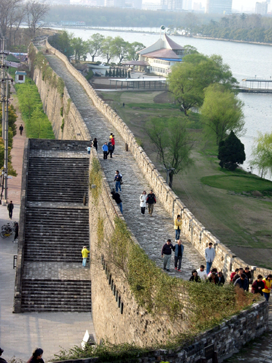
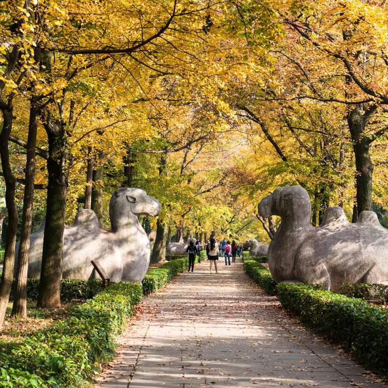
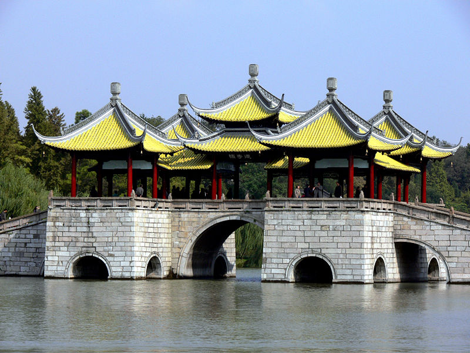
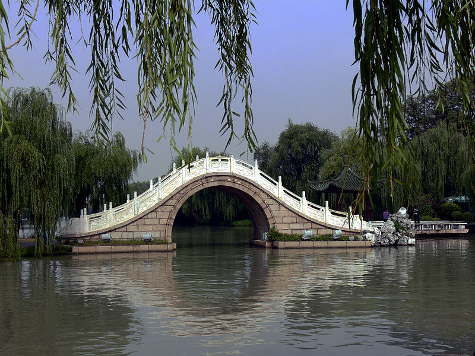

Linggusi pagoda

Mochou Lake Park

Nanjing city wall
{kind=link}

`"Elephant Road" of the
Ming tomb
{kind=link}

Nanjing's skyline

Science and Technology
Museum
ITP 2015 was held in Nanjing, China |
 |
[Important Dates] [Programme] [Travel + Registration] [ITP Booklet]
[Accepted Papers] [CFP] [Committees] [Conference History] [ITP 2016 Bids]
The 6th conference on Interactive Theorem Proving was held in Nanjing, China. The proceedings were published as usual in the LNCS Series. There was an Isabelle tutorial before the conference (21 - 23 August), and a Coq tutorial after the conference (27 - 29 August, see also here).
 Programme
Programme
ITP Booklet,
contains practical information about registration, travelling, restaurants, etc.
Important Dates
Submission of title and abstracts: 9 March 2015Submission of full papers:
Author notification: 15 May 2015
Camera-ready papers: 5 June 2015
Conference: 24-27 August 2015
Submission page
{kind=link}
Programme
As is the tradition, the conference consisted of 4 days of research presentations and invited talks. Like in previous conferences, there was ample time between the formal sessions for attendees to mingle and converse. Half a day was dedicated to an excursion to Yangzhou and the Slender West Lake. The programme of talks can be found here.Travel to Nanjing
Nanjing is a major city in China. There are international airline connections directly to Nanjing Lukou Airport and via transfer at airports in Hong Kong, Beijing, Shanghai and many others. There are also very convenient train connections from Shanghai and Beijing, which take slightly more than 1h from Shanghai and about 4h from Beijing. Travel within Nanjing can be done cheaply via taxi and public transport. Hopefully helpful tips for travelling in Nanjing and China can be found in the booklet.Remember that travelling to China requires a visa; but it should be relatively easy to obtain one for participants. You will need a letter of invitation which Chunhan will send you (chunhanwu at 126 dot com). You need to provide him with your name, title, DOB, work address, e-mail and paper title (if you present a paper). See the booklet for details about the visa application.
Registration
The early rate of the registration fee will be 3300元 (ca. £350/$533/€488). The late rate starting from 1 August will be 3800元. The registration fee includes lunches during the conference. It also covers the excursion, the conference banquet and a welcome reception. The tutorials are separate. Their registration fee is 250元 for the Isabelle-tutorial and 200元 for the Coq-tutorial.The registration fee needs to be transferred via a bank transfer; we cannot accept credit cards etc for the conference fee. The hotel and many other things can be paid by credit card, but not the conference fee. See the booklet for details about the bank transfer.
Local Information
Being in China, Nanjing offers the usual conveniences of good and affordable food. It has several excellent museums and tourist attractions. In the nearby vicinity are touristic hotspots like Yangzhou, Hangzhou, Wuxi and Suzhou. If you want to explore Nanjing yourself, the best tour is to go to the Purple Mountains passing by the Linggusi pagoda, the city wall and the Ming tombs (see pictures on the left). There is a wide selection of excellent restaurants around Nanjing's Confucius Temple.
Excursion
The excursion went to Yangzhou (1h away from Nanjing by bus). We walked around the Slender West Lake with its pavilions, the white Lotus Flower Pagoda and the Suzhou-style gardens.|  |  |

|
Programme Committee
| Andrea Asperti | University of Bologna, Italy |
| Jesper Bengtson | IT University of Copenhagen, Denmark |
| Stefan Berghofer | Secunet Security Networks AG, Germany |
| Yves Bertot | INRIA, France |
| Lars Birkedal | Aarhus University, Denmark |
| Sandrine Blazy | University of Rennes, France |
| Bob Constable | Cornell University, USA |
| Thierry Coquand | University of Gothenburg, Sweden |
| Xinyu Feng | University of Science and Technology, China |
| Ruben Gamboa | University of Wyoming, USA |
| Herman Geuvers | Radboud University Nijmegen, The Netherlands |
| Mike Gordon | Cambridge University, United Kingdom |
| Elsa Gunter | University of Illinois, Urbana-Champaign, USA |
| John Harrison | Intel Corporation, USA |
| Hugo Herbelin | INRIA, France |
| Matt Kaufmann | University of Texas at Austin, USA |
| Gerwin Klein | NICTA, Australia |
| César Muñoz | NASA Langley Research Center, USA |
| Tobias Nipkow | TU München, Germany |
| Michael Norrish | NICTA, Australia |
| Scott Owens | University of Kent, United Kingdom |
| Randy Pollack | Harvard University, USA |
| Carsten Schürmann | IT University of Copenhagen, Denmark |
| Konrad Slind | Rockwell Collins, USA |
| Alwen Tiu | Nanyang Technological University, Singapore |
| Christian Urban (co-chair) | King's College London, United Kingdom |
| Dimitrios Vytiniotis | Microsoft Research Cambridge, United Kingdom |
| Xingyuan Zhang (co-chair) | PLA University of Science and Technology, China |